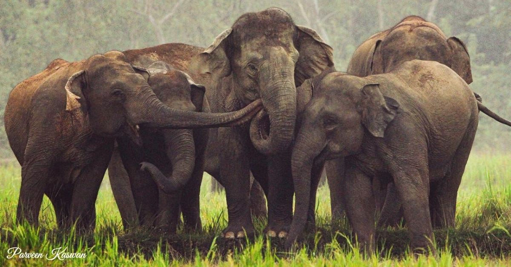
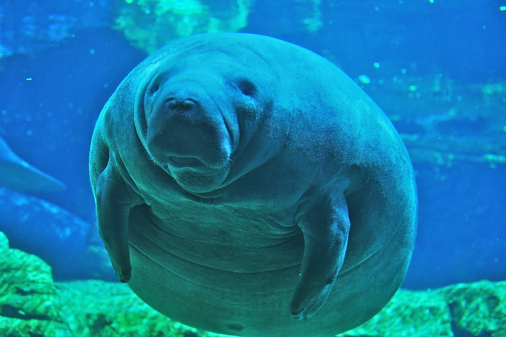
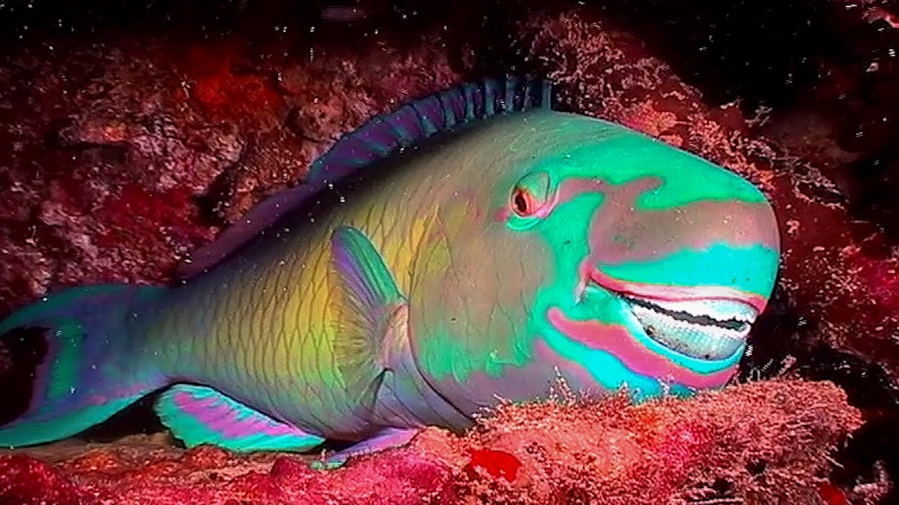

THE ANIMAL KINGDOM!
About us
Follow us

Interesting Facts About Elephant
- At birth, a baby elephants weigh 210 lbs (or 95kg).
- The trunk is an incredibly useful, dexterous and clever appendage. It is able to sense the size, shape and temperature of an object
- To prove that point, elephants can smell water from 12 miles away!That makes sense when you consider that they drink 210 litres of water a day.
- Elephants actually have very sensitive skin, so they use the mud and dust to protect it
- Elephants are the only mammals besides humans to have chins!
Interesting Facts About Racoons
- Raccoons have been around for 40,000 years.
- Raccoons are small, have sensitive hands and can eat just about anything, making them ideal for urban life.
- Raccoons love life in the big city! Today there are 20 times more raccoons in cities than there were 70 years ago
- Toronto is the raccoon capital of the world. Fifty times more raccoons live there than in the surrounding countryside.
- Raccoons' hands have a bunch of nerves that are like taste buds sending information to the brain.

Interesting Facts About Dugong
- Dugongs are strictly herbivorous meaning they eat only plants. They’re a tropical to sub-tropical species found in 37 different countries, however Australian waters are home to one of the largest population of dugong
- Male dugongs grow tusks when they reach maturity. Female Dugongs also get tusks but these erupt in older females.
- You can estimate a dugong's age by how many rings that they have on their tusks, just like a tree!
- Dugongs breathe in oxygen from above the surface of the water through there nostrils and can hold its breath for up to 11 minutes and dive up to 33 metres to feed.
- Dugongs don't have the best eyesight, but they make up for it with excellent hearing.

Interesting Facts About Mantis Shrimp
- The mantis shrimp can punch with the speed of a .22 caliber bullet
- When a mantis shrimp hits its target, the velocity causes water to vaporize, then implode with a sharp bang, extremely high heat, and a flash of light—all of which is felt by the prey animal as an additional blow.
- When the striking limb of a mantis shrimp is not in use, it lies folded under the animal’s body, compressing a saddle-shaped spring that drives the animals stupendous strikes.
- The animal’s eyes can see a huge variety of light wavelengths, including those in the ultraviolet spectrum.
- They're helping scientists build a better body armour.

Interesting Facts About Parrotfish
- The name "parrotfish" is derived from their fused teeth, which bear close resemblance to a bird's beak.
- Their teeth are specialized for scraping algae and invertebrates from coral and rocks.
- Parrotfish are generally social and may be found in schools of around 40 individuals.
- Their teeth are specialized for scraping algae and invertebrates from coral and rocks.
- A parrotfish produces mucus bubbles blown from their mouths and creates a translucent nightgown to protect themselves while in slumber.